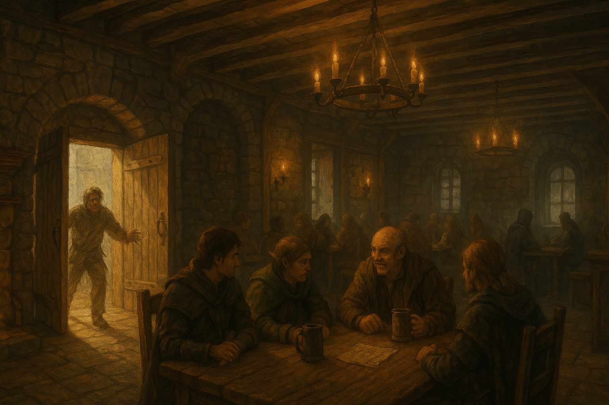

Chapter 1: The Curse of Vowalon
Curse of Vowalon

Curse of Vowalon
15048.7.18
冒險者們來到了 Vowalon，並光顧了 Rowdy’s Club。鎮上的酒鬼 Alfie 醉醺醺地撞開門，大聲哭喊：「我們都被詛咒了！」
冒險者們向 Bruce 探聽詛咒的事，得知數個月前 Samick 的死亡是一切的開端。冒險者們和 Bruce 要了一張小鎮的地圖，Bruce 也建議明日拜訪鎮長並慰問他。
離開俱樂部後，冒險者們步行到 Night Dreamers 準備下榻。一名冒險者撞見鎮上傳言的斗篷人，眾人和旅店老闆一同前往探查，卻沒有找到他的蹤跡。